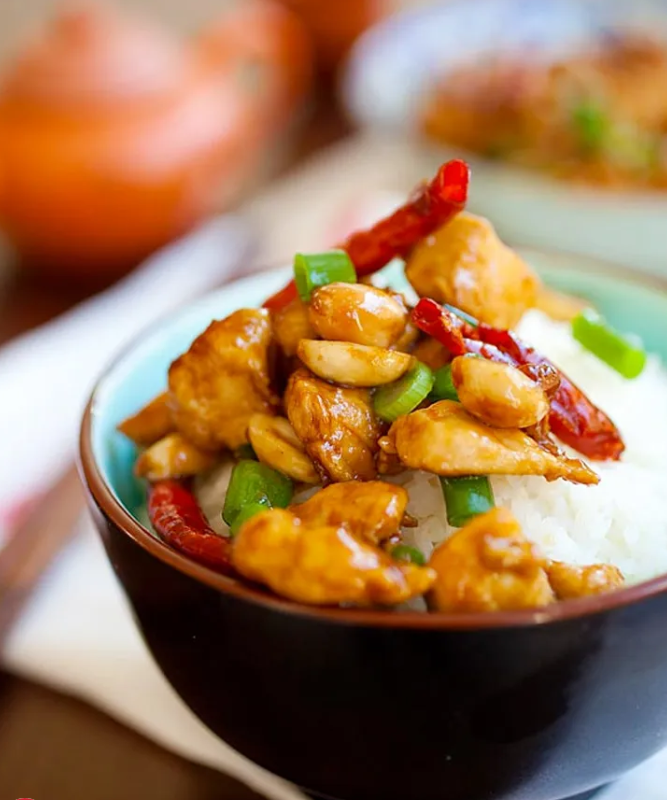

Kung Pao Chicken Dish |
Back to Home | |
|  | ||
|
Ingredients: For Chicken 12 oz. boneless, skinless chicken breasts 3 tbsp roasted peanuts 6-8 dried red chilies (seeded, halved) 3 tbsp oil 5 slices peeled fresh ginger 2 cloves garlic (sliced diagonally) 1 stalk scallion (cut into rings) Marinade: 1 tbsp corn starch 2 tsp soy sauce 1 tbsp Chinese Shaoxing rice wine (optional) 1 tsp oil Sauce: 1.5 tbsp soy sauce 1 tsp dark soy sauce 1 tsp sugar 0.25 tsp Chinese black vinegar 2 tbsp water 1 tsp corn starch Cooking Instructions: Step 1: Cut the chicken meat into small cubes, rinse in water, pat dry with paper towels and marinate with the ingredients above for 30 minutes. Mix the sauce ingredients in a small bowl and set aside. Step 2: Heat up a wok with one tablespoon of oil and stir-fry the marinated chicken until they are 70% cook. Dish out and set aside. Clean the wok and add in the remaining 2 tablespoons of oil until it's fully heated. Add in the ginger and garlic slices and do a quick stir before adding in the dried red chilies. Step 3: Stir-fry the dried red chilies until aromatic and smell spicy, then add in the chicken meat. Do a few quick stirs before adding in the roasted peanuts. Step 4: Add the sauce and stir continuously until the chicken meat is nicely coated with the sauce. Add in the scallions, stir to combine well with the chicken, dish out and serve immediately with steamed rice. |